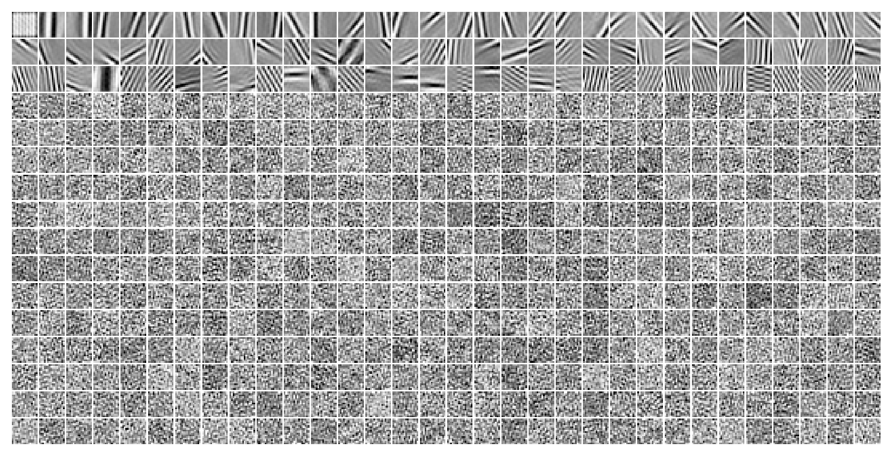
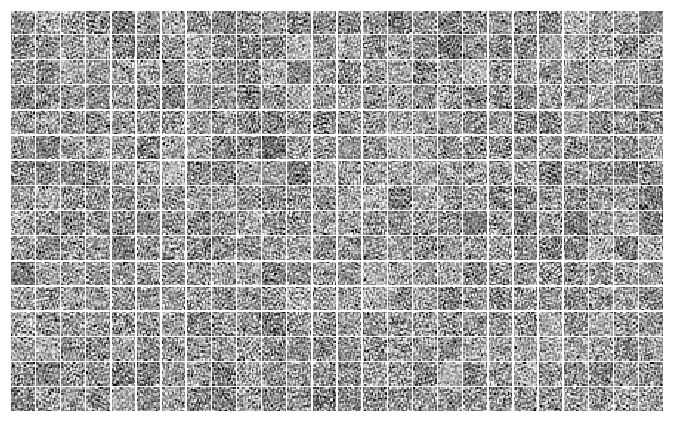

(06) DOVES—LapLin—1#
Motivation: Laplace + DOVES + Lin encoder. prior_fit = False. Device = cuda:1
Show code cell source
# HIDE CODE
import os, sys
from IPython.display import display
# tmp & extras dir
git_dir = os.path.join(os.environ['HOME'], 'Dropbox/git')
extras_dir = os.path.join(git_dir, 'jb-vae/_extras')
fig_base_dir = os.path.join(git_dir, 'jb-vae/figs')
tmp_dir = os.path.join(git_dir, 'jb-vae/tmp')
# GitHub
sys.path.insert(0, os.path.join(git_dir, '_PoissonVAE'))
from figures.fighelper import *
from vae.train_vae import *
# warnings, tqdm, & style
warnings.filterwarnings('ignore', category=DeprecationWarning)
from rich.jupyter import print
%matplotlib inline
set_style()
device_idx = 1
device = f'cuda:{device_idx}'
model_type = 'laplace'
Archi: <lin|lin>#
cfg_vae, cfg_tr = default_configs('DOVES', model_type, 'lin|lin')
print(f"VAE:\n{cfg_vae}\n\nTrainer:\n{cfg_tr}")
VAE: {'dataset': 'DOVES', 'n_ch': 32, 'n_latents': 512, 'latent_act': None, 'enc_type': 'lin', 'dec_type': 'lin', 'enc_bias': False, 'dec_bias': False} Trainer: {'temp_anneal_portion': 1.0, 'temp_stop': 1.0, 'temp_anneal_type': 'exp', 'lr': 0.005, 'batch_size': 1000, 'epochs': 3000, 'optimizer_kws': {'weight_decay': 0.0}, 'grad_clip': 500}
vae = MODEL_CLASSES[model_type](CFG_CLASSES[model_type](**cfg_vae))
tr = TrainerVAE(vae, ConfigTrainVAE(**cfg_tr), device=device)
vae.print()
print(f"{vae.cfg.name()}\n{tr.cfg.name()}_({vae.timestamp})\n")
tr.show_schedules()
+-------------+------------+ | Module Name | Num Params | +-------------+------------+ | LaplaceVAE | 393.2 K | | --- | --- | | fc_enc | 262.1 K | | fc_dec | 131.1 K | +-------------+------------+
laplace_DOVES_z-512_<lin|lin> mc_b1000-ep3000-lr(0.005)_beta(1:0x0.5)_temp(1:exp-1)_gr(500)_(2024_05_06,18:44)
vae.fc_enc.bias, vae.fc_dec.bias
(None, None)
Train#
# comment = f"..._{tr.cfg.name()}"
comment = tr.cfg.name()
tr.train(comment=comment)
epoch # 1904, avg loss: 170.036181: 63%|██████████████▌ | 1904/3000 [40:37<28:26, 1.56s/it]
Loss vld (freeze)#
data, loss, etc = tr.validate()
_loss = {k: v.mean() for k, v in loss.items()}
_loss['tot'] = _loss['mse'] + _loss['kl']
print(_loss)
{'mse': 126.911865, 'kl': 40.444523, 'kl_diag': 0.07850062, 'tot': 167.35638}
### Was: categorical with prior fit
{'mse': 165.39445, 'kl': 5.4255557, 'kl_diag': 5.414346, 'tot': 170.82}
### Was: fixed prior
{'mse': 165.01498, 'kl': 5.632016, 'kl_diag': 5.6216135, 'tot': 170.647}
Plot enc/dec weights#
vae.show(dpi=250, order=np.argsort(flatten_np(etc['scale'], start_dim=1).mean(0)));

Some more distributions#
tr.model.temp, tr.cfg.kl_beta
(tensor(1., device='cuda:1'), 1.0)
from figures.imgs import plot_weights
dead_thres = 0.1
try:
ind = np.where(loss['kl_diag'] < dead_thres)[0]
plot_weights(vae.fc_dec.weight.data.T.reshape(-1, 16, 16)[ind], nrows=16, dpi=110);
except ValueError:
pass

try:
ind = np.where(tonp(vae.log_scale.squeeze()) > 1)[0]
plot_weights(vae.fc_dec.weight.data.T.reshape(-1, 16, 16)[ind], nrows=1, dpi=15);
except ValueError:
pass
Loggabor analysis#
dead_thres = 0.1
dead = loss['kl_diag'] < dead_thres
from analysis.loggabor import fit_loggabor
from figures.theta import plot_theta
from figures.imgs import plot_weights
from analysis import loggabor
import importlib
importlib.reload(loggabor)
<module 'analysis.loggabor' from '/home/hadi/Dropbox/git/_PoissonVAE/analysis/loggabor.py'>
results = loggabor.fit_loggabor(tr, verbose=True)
0%| | 2/512 [00:00<00:39, 12.84it/s]
warning: zero norm model with pars= Parameters([('x_pos', <Parameter 'x_pos', value=2.1860593012044163, bounds=[0:16]>), ('y_pos', <Parameter 'y_pos', value=7.540883986753505, bounds=[0:16]>), ('theta', <Parameter 'theta', value=0.12355123619197106, bounds=[-1.5707963267948966:1.5707963267948966]>), ('sf_0', <Parameter 'sf_0', value=0.21484249011410916, bounds=[0.001:inf]>), ('phase', <Parameter 'phase', value=1.2585069288661936, bounds=[-inf:inf]>), ('B_sf', <Parameter 'B_sf', value=0.21056558164424144, bounds=[0.001:inf]>), ('B_theta', <Parameter 'B_theta', value=0.05181668084424762, bounds=[0.001:inf]>)])
warning: zero norm model with pars= Parameters([('x_pos', <Parameter 'x_pos', value=1.1832488805453902, bounds=[0:16]>), ('y_pos', <Parameter 'y_pos', value=1.9379355120987691, bounds=[0:16]>), ('theta', <Parameter 'theta', value=-0.11795188827836633, bounds=[-1.5707963267948966:1.5707963267948966]>), ('sf_0', <Parameter 'sf_0', value=0.19798316487052137, bounds=[0.001:inf]>), ('phase', <Parameter 'phase', value=-0.39178657956389606, bounds=[-inf:inf]>), ('B_sf', <Parameter 'B_sf', value=0.5781542867013788, bounds=[0.001:inf]>), ('B_theta', <Parameter 'B_theta', value=0.05290948461519662, bounds=[0.001:inf]>)])
3%|▎ | 13/512 [00:01<00:41, 12.06it/s]
warning: zero norm model with pars= Parameters([('x_pos', <Parameter 'x_pos', value=10.819342326349839, bounds=[0:16]>), ('y_pos', <Parameter 'y_pos', value=12.145873074719434, bounds=[0:16]>), ('theta', <Parameter 'theta', value=1.2853373992429895, bounds=[-1.5707963267948966:1.5707963267948966]>), ('sf_0', <Parameter 'sf_0', value=0.42390121143414616, bounds=[0.001:inf]>), ('phase', <Parameter 'phase', value=12.05485184834894, bounds=[-inf:inf]>), ('B_sf', <Parameter 'B_sf', value=0.020860132491679617, bounds=[0.001:inf]>), ('B_theta', <Parameter 'B_theta', value=0.049976405431274684, bounds=[0.001:inf]>)])
4%|▌ | 22/512 [00:02<00:47, 10.32it/s]
warning: zero norm model with pars= Parameters([('x_pos', <Parameter 'x_pos', value=5.5937918266302233e-05, bounds=[0:16]>), ('y_pos', <Parameter 'y_pos', value=14.372035588064454, bounds=[0:16]>), ('theta', <Parameter 'theta', value=0.7214549394495058, bounds=[-1.5707963267948966:1.5707963267948966]>), ('sf_0', <Parameter 'sf_0', value=0.32360188058412, bounds=[0.001:inf]>), ('phase', <Parameter 'phase', value=-0.11497133994976418, bounds=[-inf:inf]>), ('B_sf', <Parameter 'B_sf', value=0.1596904846431636, bounds=[0.001:inf]>), ('B_theta', <Parameter 'B_theta', value=0.05285853217466696, bounds=[0.001:inf]>)])
7%|▊ | 35/512 [00:03<00:44, 10.73it/s]
warning: zero norm model with pars= Parameters([('x_pos', <Parameter 'x_pos', value=3.1915756534229374, bounds=[0:16]>), ('y_pos', <Parameter 'y_pos', value=12.844280593113126, bounds=[0:16]>), ('theta', <Parameter 'theta', value=-0.31113543424217527, bounds=[-1.5707963267948966:1.5707963267948966]>), ('sf_0', <Parameter 'sf_0', value=0.29836602964770276, bounds=[0.001:inf]>), ('phase', <Parameter 'phase', value=-0.2825367224075166, bounds=[-inf:inf]>), ('B_sf', <Parameter 'B_sf', value=0.058983253919369205, bounds=[0.001:inf]>), ('B_theta', <Parameter 'B_theta', value=0.04971069508332138, bounds=[0.001:inf]>)])
8%|█ | 43/512 [00:04<00:43, 10.81it/s]
warning: zero norm model with pars= Parameters([('x_pos', <Parameter 'x_pos', value=14.539094040446034, bounds=[0:16]>), ('y_pos', <Parameter 'y_pos', value=10.291099339459844, bounds=[0:16]>), ('theta', <Parameter 'theta', value=0.32979396223566093, bounds=[-1.5707963267948966:1.5707963267948966]>), ('sf_0', <Parameter 'sf_0', value=0.2794014817850089, bounds=[0.001:inf]>), ('phase', <Parameter 'phase', value=1.7860849355217536, bounds=[-inf:inf]>), ('B_sf', <Parameter 'B_sf', value=0.16817870605125773, bounds=[0.001:inf]>), ('B_theta', <Parameter 'B_theta', value=0.052639336440543194, bounds=[0.001:inf]>)])
10%|█▏ | 50/512 [00:04<00:54, 8.47it/s]
warning: zero norm model with pars= Parameters([('x_pos', <Parameter 'x_pos', value=2.573645376450486, bounds=[0:16]>), ('y_pos', <Parameter 'y_pos', value=4.6566208748645685, bounds=[0:16]>), ('theta', <Parameter 'theta', value=1.4491874573238492, bounds=[-1.5707963267948966:1.5707963267948966]>), ('sf_0', <Parameter 'sf_0', value=0.13270585300269777, bounds=[0.001:inf]>), ('phase', <Parameter 'phase', value=2.033332955209376, bounds=[-inf:inf]>), ('B_sf', <Parameter 'B_sf', value=0.6892859321739112, bounds=[0.001:inf]>), ('B_theta', <Parameter 'B_theta', value=0.05236278351432999, bounds=[0.001:inf]>)])
11%|█▎ | 58/512 [00:05<00:28, 15.82it/s]
warning: zero norm model with pars= Parameters([('x_pos', <Parameter 'x_pos', value=5.078907862117434, bounds=[0:16]>), ('y_pos', <Parameter 'y_pos', value=0.550372552800579, bounds=[0:16]>), ('theta', <Parameter 'theta', value=-1.3641668542295178, bounds=[-1.5707963267948966:1.5707963267948966]>), ('sf_0', <Parameter 'sf_0', value=0.6198217596232688, bounds=[0.001:inf]>), ('phase', <Parameter 'phase', value=-1.6894664734061415, bounds=[-inf:inf]>), ('B_sf', <Parameter 'B_sf', value=0.3256161401896004, bounds=[0.001:inf]>), ('B_theta', <Parameter 'B_theta', value=0.05268390920006938, bounds=[0.001:inf]>)])
16%|█▉ | 82/512 [00:09<00:55, 7.70it/s]
warning: zero norm model with pars= Parameters([('x_pos', <Parameter 'x_pos', value=3.4501337198389948, bounds=[0:16]>), ('y_pos', <Parameter 'y_pos', value=11.196750829522294, bounds=[0:16]>), ('theta', <Parameter 'theta', value=-0.7839300469186293, bounds=[-1.5707963267948966:1.5707963267948966]>), ('sf_0', <Parameter 'sf_0', value=0.38451221611888553, bounds=[0.001:inf]>), ('phase', <Parameter 'phase', value=-0.30880652482439364, bounds=[-inf:inf]>), ('B_sf', <Parameter 'B_sf', value=0.02887800183979794, bounds=[0.001:inf]>), ('B_theta', <Parameter 'B_theta', value=0.04859665899298482, bounds=[0.001:inf]>)])
16%|█▉ | 84/512 [00:09<00:53, 8.00it/s]
warning: zero norm model with pars= Parameters([('x_pos', <Parameter 'x_pos', value=7.772497607579813, bounds=[0:16]>), ('y_pos', <Parameter 'y_pos', value=6.945094845273436, bounds=[0:16]>), ('theta', <Parameter 'theta', value=1.3043066405268067, bounds=[-1.5707963267948966:1.5707963267948966]>), ('sf_0', <Parameter 'sf_0', value=0.35223472049701054, bounds=[0.001:inf]>), ('phase', <Parameter 'phase', value=1.4590928900763427, bounds=[-inf:inf]>), ('B_sf', <Parameter 'B_sf', value=0.041128261670649535, bounds=[0.001:inf]>), ('B_theta', <Parameter 'B_theta', value=0.03978138094697281, bounds=[0.001:inf]>)])
19%|██▎ | 99/512 [00:12<01:28, 4.66it/s]
warning: zero norm model with pars= Parameters([('x_pos', <Parameter 'x_pos', value=1.7833518208220474, bounds=[0:16]>), ('y_pos', <Parameter 'y_pos', value=1.059541079587401, bounds=[0:16]>), ('theta', <Parameter 'theta', value=-0.41286064454426397, bounds=[-1.5707963267948966:1.5707963267948966]>), ('sf_0', <Parameter 'sf_0', value=0.33354136798030576, bounds=[0.001:inf]>), ('phase', <Parameter 'phase', value=1.640321264670063, bounds=[-inf:inf]>), ('B_sf', <Parameter 'B_sf', value=0.35180142581668494, bounds=[0.001:inf]>), ('B_theta', <Parameter 'B_theta', value=0.04952136475625302, bounds=[0.001:inf]>)])
21%|██▎ | 110/512 [00:14<00:52, 7.61it/s]
warning: zero norm model with pars= Parameters([('x_pos', <Parameter 'x_pos', value=6.743929858998854e-09, bounds=[0:16]>), ('y_pos', <Parameter 'y_pos', value=7.6023154091234595, bounds=[0:16]>), ('theta', <Parameter 'theta', value=-0.26657801129965186, bounds=[-1.5707963267948966:1.5707963267948966]>), ('sf_0', <Parameter 'sf_0', value=0.35043114814435194, bounds=[0.001:inf]>), ('phase', <Parameter 'phase', value=2.5907808714401, bounds=[-inf:inf]>), ('B_sf', <Parameter 'B_sf', value=0.04288002446408179, bounds=[0.001:inf]>), ('B_theta', <Parameter 'B_theta', value=0.04691910340032435, bounds=[0.001:inf]>)])
25%|██▊ | 128/512 [00:17<00:32, 11.87it/s]
warning: zero norm model with pars= Parameters([('x_pos', <Parameter 'x_pos', value=14.083064212445858, bounds=[0:16]>), ('y_pos', <Parameter 'y_pos', value=9.169846774317975, bounds=[0:16]>), ('theta', <Parameter 'theta', value=-0.10213878488563899, bounds=[-1.5707963267948966:1.5707963267948966]>), ('sf_0', <Parameter 'sf_0', value=0.29829443146580903, bounds=[0.001:inf]>), ('phase', <Parameter 'phase', value=-1.4578541864918906, bounds=[-inf:inf]>), ('B_sf', <Parameter 'B_sf', value=0.19396057371218156, bounds=[0.001:inf]>), ('B_theta', <Parameter 'B_theta', value=0.05307160798013577, bounds=[0.001:inf]>)])
26%|██▉ | 134/512 [00:17<00:22, 16.66it/s]
warning: zero norm model with pars= Parameters([('x_pos', <Parameter 'x_pos', value=9.008426535577126, bounds=[0:16]>), ('y_pos', <Parameter 'y_pos', value=5.695087654037367, bounds=[0:16]>), ('theta', <Parameter 'theta', value=-1.3353835932953415, bounds=[-1.5707963267948966:1.5707963267948966]>), ('sf_0', <Parameter 'sf_0', value=0.3818953054550568, bounds=[0.001:inf]>), ('phase', <Parameter 'phase', value=-1.6987743906986306, bounds=[-inf:inf]>), ('B_sf', <Parameter 'B_sf', value=0.08846193066511188, bounds=[0.001:inf]>), ('B_theta', <Parameter 'B_theta', value=0.044052330993087474, bounds=[0.001:inf]>)])
27%|██▉ | 136/512 [00:17<00:26, 14.34it/s]
warning: zero norm model with pars= Parameters([('x_pos', <Parameter 'x_pos', value=3.7340956100941565, bounds=[0:16]>), ('y_pos', <Parameter 'y_pos', value=4.009741253643432, bounds=[0:16]>), ('theta', <Parameter 'theta', value=-0.11714369932850333, bounds=[-1.5707963267948966:1.5707963267948966]>), ('sf_0', <Parameter 'sf_0', value=0.2562175041579545, bounds=[0.001:inf]>), ('phase', <Parameter 'phase', value=-3.1472111075056515, bounds=[-inf:inf]>), ('B_sf', <Parameter 'B_sf', value=0.22772348122902064, bounds=[0.001:inf]>), ('B_theta', <Parameter 'B_theta', value=0.050729841785745244, bounds=[0.001:inf]>)])
28%|███ | 144/512 [00:20<01:14, 4.94it/s]
warning: zero norm model with pars= Parameters([('x_pos', <Parameter 'x_pos', value=8.710796243598697, bounds=[0:16]>), ('y_pos', <Parameter 'y_pos', value=0.8234394773989591, bounds=[0:16]>), ('theta', <Parameter 'theta', value=-0.7817686342663047, bounds=[-1.5707963267948966:1.5707963267948966]>), ('sf_0', <Parameter 'sf_0', value=0.3139851908609771, bounds=[0.001:inf]>), ('phase', <Parameter 'phase', value=-1.6485518169720668, bounds=[-inf:inf]>), ('B_sf', <Parameter 'B_sf', value=0.06597126580328416, bounds=[0.001:inf]>), ('B_theta', <Parameter 'B_theta', value=0.05230153186639319, bounds=[0.001:inf]>)])
35%|███▊ | 177/512 [00:24<00:24, 13.41it/s]
warning: zero norm model with pars= Parameters([('x_pos', <Parameter 'x_pos', value=8.513103241865247, bounds=[0:16]>), ('y_pos', <Parameter 'y_pos', value=6.432101851976769, bounds=[0:16]>), ('theta', <Parameter 'theta', value=0.2804394822965124, bounds=[-1.5707963267948966:1.5707963267948966]>), ('sf_0', <Parameter 'sf_0', value=0.3488169737413346, bounds=[0.001:inf]>), ('phase', <Parameter 'phase', value=-6.153137418317545, bounds=[-inf:inf]>), ('B_sf', <Parameter 'B_sf', value=0.05677344979230636, bounds=[0.001:inf]>), ('B_theta', <Parameter 'B_theta', value=0.04590306876351613, bounds=[0.001:inf]>)])
40%|████▍ | 205/512 [00:29<00:44, 6.90it/s]
warning: zero norm model with pars= Parameters([('x_pos', <Parameter 'x_pos', value=3.8254495895048644, bounds=[0:16]>), ('y_pos', <Parameter 'y_pos', value=6.520205399192565, bounds=[0:16]>), ('theta', <Parameter 'theta', value=0.25817697553140784, bounds=[-1.5707963267948966:1.5707963267948966]>), ('sf_0', <Parameter 'sf_0', value=0.3493453045049123, bounds=[0.001:inf]>), ('phase', <Parameter 'phase', value=4.344941263807369, bounds=[-inf:inf]>), ('B_sf', <Parameter 'B_sf', value=0.043801397347657756, bounds=[0.001:inf]>), ('B_theta', <Parameter 'B_theta', value=0.04830057924096287, bounds=[0.001:inf]>)])
warning: zero norm model with pars= Parameters([('x_pos', <Parameter 'x_pos', value=8.272799530600146, bounds=[0:16]>), ('y_pos', <Parameter 'y_pos', value=10.08201315940216, bounds=[0:16]>), ('theta', <Parameter 'theta', value=-0.10792170242208865, bounds=[-1.5707963267948966:1.5707963267948966]>), ('sf_0', <Parameter 'sf_0', value=0.2793536998473075, bounds=[0.001:inf]>), ('phase', <Parameter 'phase', value=1.1236514894093774, bounds=[-inf:inf]>), ('B_sf', <Parameter 'B_sf', value=0.05048148836842026, bounds=[0.001:inf]>), ('B_theta', <Parameter 'B_theta', value=0.050422784424251854, bounds=[0.001:inf]>)])
41%|████▌ | 211/512 [00:31<01:16, 3.95it/s]
warning: zero norm model with pars= Parameters([('x_pos', <Parameter 'x_pos', value=7.739222321754802, bounds=[0:16]>), ('y_pos', <Parameter 'y_pos', value=7.076867386124097, bounds=[0:16]>), ('theta', <Parameter 'theta', value=-0.9478268466948504, bounds=[-1.5707963267948966:1.5707963267948966]>), ('sf_0', <Parameter 'sf_0', value=0.053396666066589105, bounds=[0.001:inf]>), ('phase', <Parameter 'phase', value=2.9963671973978463, bounds=[-inf:inf]>), ('B_sf', <Parameter 'B_sf', value=0.5583122379061428, bounds=[0.001:inf]>), ('B_theta', <Parameter 'B_theta', value=0.04720871304311369, bounds=[0.001:inf]>)])
43%|████▋ | 219/512 [00:32<00:34, 8.49it/s]
warning: zero norm model with pars= Parameters([('x_pos', <Parameter 'x_pos', value=7.382961443704448, bounds=[0:16]>), ('y_pos', <Parameter 'y_pos', value=7.569504822788948, bounds=[0:16]>), ('theta', <Parameter 'theta', value=-0.35665891703634434, bounds=[-1.5707963267948966:1.5707963267948966]>), ('sf_0', <Parameter 'sf_0', value=0.635825063105106, bounds=[0.001:inf]>), ('phase', <Parameter 'phase', value=-2.039513554309966, bounds=[-inf:inf]>), ('B_sf', <Parameter 'B_sf', value=0.7195823550314658, bounds=[0.001:inf]>), ('B_theta', <Parameter 'B_theta', value=0.05297571903638543, bounds=[0.001:inf]>)])
47%|█████▏ | 240/512 [00:35<00:32, 8.43it/s]
warning: zero norm model with pars= Parameters([('x_pos', <Parameter 'x_pos', value=11.870432631758336, bounds=[0:16]>), ('y_pos', <Parameter 'y_pos', value=7.169366565675367, bounds=[0:16]>), ('theta', <Parameter 'theta', value=1.1080393581572556, bounds=[-1.5707963267948966:1.5707963267948966]>), ('sf_0', <Parameter 'sf_0', value=0.3529180035506775, bounds=[0.001:inf]>), ('phase', <Parameter 'phase', value=2.0201714572510943, bounds=[-inf:inf]>), ('B_sf', <Parameter 'B_sf', value=0.09443497738382678, bounds=[0.001:inf]>), ('B_theta', <Parameter 'B_theta', value=0.043726898416646676, bounds=[0.001:inf]>)])
warning: zero norm model with pars= Parameters([('x_pos', <Parameter 'x_pos', value=7.905179471717614, bounds=[0:16]>), ('y_pos', <Parameter 'y_pos', value=9.05958572049582, bounds=[0:16]>), ('theta', <Parameter 'theta', value=1.167369313019917, bounds=[-1.5707963267948966:1.5707963267948966]>), ('sf_0', <Parameter 'sf_0', value=0.3774023817669977, bounds=[0.001:inf]>), ('phase', <Parameter 'phase', value=-12.191717250548471, bounds=[-inf:inf]>), ('B_sf', <Parameter 'B_sf', value=0.03206945446894649, bounds=[0.001:inf]>), ('B_theta', <Parameter 'B_theta', value=0.041466142417085794, bounds=[0.001:inf]>)])
49%|█████▍ | 251/512 [00:35<00:18, 13.91it/s]
warning: zero norm model with pars= Parameters([('x_pos', <Parameter 'x_pos', value=13.96276194628383, bounds=[0:16]>), ('y_pos', <Parameter 'y_pos', value=0.014720894845952515, bounds=[0:16]>), ('theta', <Parameter 'theta', value=-1.3066044273857198, bounds=[-1.5707963267948966:1.5707963267948966]>), ('sf_0', <Parameter 'sf_0', value=1.4041845443145982, bounds=[0.001:inf]>), ('phase', <Parameter 'phase', value=-2.2191458961175803, bounds=[-inf:inf]>), ('B_sf', <Parameter 'B_sf', value=2.03212106649531, bounds=[0.001:inf]>), ('B_theta', <Parameter 'B_theta', value=0.05220532358146823, bounds=[0.001:inf]>)])
52%|█████▋ | 265/512 [00:37<00:25, 9.62it/s]
warning: zero norm model with pars= Parameters([('x_pos', <Parameter 'x_pos', value=0.35086293462134677, bounds=[0:16]>), ('y_pos', <Parameter 'y_pos', value=5.646346150346655, bounds=[0:16]>), ('theta', <Parameter 'theta', value=-1.3602731886554171, bounds=[-1.5707963267948966:1.5707963267948966]>), ('sf_0', <Parameter 'sf_0', value=0.4116623678630028, bounds=[0.001:inf]>), ('phase', <Parameter 'phase', value=0.162426491126553, bounds=[-inf:inf]>), ('B_sf', <Parameter 'B_sf', value=0.028811079391185657, bounds=[0.001:inf]>), ('B_theta', <Parameter 'B_theta', value=0.04271481042781511, bounds=[0.001:inf]>)])
59%|██████▌ | 303/512 [00:41<00:13, 15.77it/s]
warning: zero norm model with pars= Parameters([('x_pos', <Parameter 'x_pos', value=6.904674617746493, bounds=[0:16]>), ('y_pos', <Parameter 'y_pos', value=7.868661701766373, bounds=[0:16]>), ('theta', <Parameter 'theta', value=-0.655353920990967, bounds=[-1.5707963267948966:1.5707963267948966]>), ('sf_0', <Parameter 'sf_0', value=0.126640874267964, bounds=[0.001:inf]>), ('phase', <Parameter 'phase', value=0.342380981878731, bounds=[-inf:inf]>), ('B_sf', <Parameter 'B_sf', value=0.1276521680495012, bounds=[0.001:inf]>), ('B_theta', <Parameter 'B_theta', value=0.052131681725101964, bounds=[0.001:inf]>)])
62%|██████▉ | 320/512 [00:43<00:13, 14.28it/s]
warning: zero norm model with pars= Parameters([('x_pos', <Parameter 'x_pos', value=1.3080910086704272, bounds=[0:16]>), ('y_pos', <Parameter 'y_pos', value=3.0013434453460244, bounds=[0:16]>), ('theta', <Parameter 'theta', value=-0.09528223316586737, bounds=[-1.5707963267948966:1.5707963267948966]>), ('sf_0', <Parameter 'sf_0', value=0.2763619903380131, bounds=[0.001:inf]>), ('phase', <Parameter 'phase', value=-0.6147310155020578, bounds=[-inf:inf]>), ('B_sf', <Parameter 'B_sf', value=0.1852406436113735, bounds=[0.001:inf]>), ('B_theta', <Parameter 'B_theta', value=0.04855095580752822, bounds=[0.001:inf]>)])
64%|███████ | 326/512 [00:44<00:14, 12.42it/s]
warning: zero norm model with pars= Parameters([('x_pos', <Parameter 'x_pos', value=10.123429325582038, bounds=[0:16]>), ('y_pos', <Parameter 'y_pos', value=2.040730472302676, bounds=[0:16]>), ('theta', <Parameter 'theta', value=-0.09645499186483186, bounds=[-1.5707963267948966:1.5707963267948966]>), ('sf_0', <Parameter 'sf_0', value=0.2903105145746917, bounds=[0.001:inf]>), ('phase', <Parameter 'phase', value=-1.733657100495134, bounds=[-inf:inf]>), ('B_sf', <Parameter 'B_sf', value=0.14955453369757155, bounds=[0.001:inf]>), ('B_theta', <Parameter 'B_theta', value=0.04522847565586219, bounds=[0.001:inf]>)])
71%|███████▊ | 364/512 [00:48<00:11, 12.84it/s]
warning: zero norm model with pars= Parameters([('x_pos', <Parameter 'x_pos', value=3.1943539479527416, bounds=[0:16]>), ('y_pos', <Parameter 'y_pos', value=8.926271295134894, bounds=[0:16]>), ('theta', <Parameter 'theta', value=0.12418862644194384, bounds=[-1.5707963267948966:1.5707963267948966]>), ('sf_0', <Parameter 'sf_0', value=0.20399702648016016, bounds=[0.001:inf]>), ('phase', <Parameter 'phase', value=1.6500582801902346, bounds=[-inf:inf]>), ('B_sf', <Parameter 'B_sf', value=0.2731693799221483, bounds=[0.001:inf]>), ('B_theta', <Parameter 'B_theta', value=0.05252153528091352, bounds=[0.001:inf]>)])
78%|████████▌ | 398/512 [00:53<00:08, 14.22it/s]
warning: zero norm model with pars= Parameters([('x_pos', <Parameter 'x_pos', value=8.390426918185803, bounds=[0:16]>), ('y_pos', <Parameter 'y_pos', value=2.3741148957072964, bounds=[0:16]>), ('theta', <Parameter 'theta', value=0.11092274645992783, bounds=[-1.5707963267948966:1.5707963267948966]>), ('sf_0', <Parameter 'sf_0', value=0.2797484807599192, bounds=[0.001:inf]>), ('phase', <Parameter 'phase', value=-1.8484667995734234, bounds=[-inf:inf]>), ('B_sf', <Parameter 'B_sf', value=0.04248521412768336, bounds=[0.001:inf]>), ('B_theta', <Parameter 'B_theta', value=0.04453638065369259, bounds=[0.001:inf]>)])
warning: zero norm model with pars= Parameters([('x_pos', <Parameter 'x_pos', value=2.389976309426922, bounds=[0:16]>), ('y_pos', <Parameter 'y_pos', value=8.577283844482356, bounds=[0:16]>), ('theta', <Parameter 'theta', value=-1.2964503106814522, bounds=[-1.5707963267948966:1.5707963267948966]>), ('sf_0', <Parameter 'sf_0', value=0.36050302682417146, bounds=[0.001:inf]>), ('phase', <Parameter 'phase', value=8.938511988108644, bounds=[-inf:inf]>), ('B_sf', <Parameter 'B_sf', value=0.06736688302272908, bounds=[0.001:inf]>), ('B_theta', <Parameter 'B_theta', value=0.04791059501168837, bounds=[0.001:inf]>)])
79%|████████▋ | 402/512 [00:54<00:08, 13.13it/s]
warning: zero norm model with pars= Parameters([('x_pos', <Parameter 'x_pos', value=14.468840336739026, bounds=[0:16]>), ('y_pos', <Parameter 'y_pos', value=5.242871215795371, bounds=[0:16]>), ('theta', <Parameter 'theta', value=-0.4744418522601632, bounds=[-1.5707963267948966:1.5707963267948966]>), ('sf_0', <Parameter 'sf_0', value=0.3307263197481095, bounds=[0.001:inf]>), ('phase', <Parameter 'phase', value=2.062009531970946, bounds=[-inf:inf]>), ('B_sf', <Parameter 'B_sf', value=0.06727929089794682, bounds=[0.001:inf]>), ('B_theta', <Parameter 'B_theta', value=0.04976426910117937, bounds=[0.001:inf]>)])
81%|████████▉ | 416/512 [00:55<00:06, 14.66it/s]
warning: zero norm model with pars= Parameters([('x_pos', <Parameter 'x_pos', value=3.317782979947024, bounds=[0:16]>), ('y_pos', <Parameter 'y_pos', value=7.967637923381613, bounds=[0:16]>), ('theta', <Parameter 'theta', value=0.28991023747743605, bounds=[-1.5707963267948966:1.5707963267948966]>), ('sf_0', <Parameter 'sf_0', value=0.323893765373953, bounds=[0.001:inf]>), ('phase', <Parameter 'phase', value=-0.5477245160005263, bounds=[-inf:inf]>), ('B_sf', <Parameter 'B_sf', value=0.11239154084607816, bounds=[0.001:inf]>), ('B_theta', <Parameter 'B_theta', value=0.05255191178196472, bounds=[0.001:inf]>)])
82%|████████▉ | 418/512 [00:55<00:07, 13.15it/s]
warning: zero norm model with pars= Parameters([('x_pos', <Parameter 'x_pos', value=15.962969345858582, bounds=[0:16]>), ('y_pos', <Parameter 'y_pos', value=5.494945020967657, bounds=[0:16]>), ('theta', <Parameter 'theta', value=0.35901384353669874, bounds=[-1.5707963267948966:1.5707963267948966]>), ('sf_0', <Parameter 'sf_0', value=0.27149428378912155, bounds=[0.001:inf]>), ('phase', <Parameter 'phase', value=2.7711342235407415, bounds=[-inf:inf]>), ('B_sf', <Parameter 'B_sf', value=0.1275145856901666, bounds=[0.001:inf]>), ('B_theta', <Parameter 'B_theta', value=0.04854377719345637, bounds=[0.001:inf]>)])
86%|█████████▍ | 439/512 [00:58<00:08, 8.28it/s]
warning: zero norm model with pars= Parameters([('x_pos', <Parameter 'x_pos', value=13.701667746580501, bounds=[0:16]>), ('y_pos', <Parameter 'y_pos', value=7.5603827520324085, bounds=[0:16]>), ('theta', <Parameter 'theta', value=1.3093186983966736, bounds=[-1.5707963267948966:1.5707963267948966]>), ('sf_0', <Parameter 'sf_0', value=0.3715923277422407, bounds=[0.001:inf]>), ('phase', <Parameter 'phase', value=-2.3868376459813354, bounds=[-inf:inf]>), ('B_sf', <Parameter 'B_sf', value=0.09863089898154909, bounds=[0.001:inf]>), ('B_theta', <Parameter 'B_theta', value=0.05261466476918042, bounds=[0.001:inf]>)])
92%|██████████ | 471/512 [01:02<00:05, 7.17it/s]
warning: zero norm model with pars= Parameters([('x_pos', <Parameter 'x_pos', value=7.5938876336788645, bounds=[0:16]>), ('y_pos', <Parameter 'y_pos', value=6.40698654618351, bounds=[0:16]>), ('theta', <Parameter 'theta', value=0.3055535657804558, bounds=[-1.5707963267948966:1.5707963267948966]>), ('sf_0', <Parameter 'sf_0', value=0.31126659582442306, bounds=[0.001:inf]>), ('phase', <Parameter 'phase', value=-1.9487432734190167, bounds=[-inf:inf]>), ('B_sf', <Parameter 'B_sf', value=0.1062098563538808, bounds=[0.001:inf]>), ('B_theta', <Parameter 'B_theta', value=0.05021964586715855, bounds=[0.001:inf]>)])
95%|██████████▍| 486/512 [01:05<00:03, 8.05it/s]
warning: zero norm model with pars= Parameters([('x_pos', <Parameter 'x_pos', value=9.93686371391593, bounds=[0:16]>), ('y_pos', <Parameter 'y_pos', value=7.218534548611223, bounds=[0:16]>), ('theta', <Parameter 'theta', value=-0.45672216971350466, bounds=[-1.5707963267948966:1.5707963267948966]>), ('sf_0', <Parameter 'sf_0', value=0.35689427573285737, bounds=[0.001:inf]>), ('phase', <Parameter 'phase', value=0.004011357869275534, bounds=[-inf:inf]>), ('B_sf', <Parameter 'B_sf', value=0.07617355213502874, bounds=[0.001:inf]>), ('B_theta', <Parameter 'B_theta', value=0.04770991713367556, bounds=[0.001:inf]>)])
96%|██████████▌| 494/512 [01:06<00:01, 9.93it/s]
warning: zero norm model with pars= Parameters([('x_pos', <Parameter 'x_pos', value=0.9979353004962981, bounds=[0:16]>), ('y_pos', <Parameter 'y_pos', value=13.508094761793814, bounds=[0:16]>), ('theta', <Parameter 'theta', value=0.9001782553798421, bounds=[-1.5707963267948966:1.5707963267948966]>), ('sf_0', <Parameter 'sf_0', value=0.35483178338435806, bounds=[0.001:inf]>), ('phase', <Parameter 'phase', value=0.43068059565191136, bounds=[-inf:inf]>), ('B_sf', <Parameter 'B_sf', value=0.04822621313001518, bounds=[0.001:inf]>), ('B_theta', <Parameter 'B_theta', value=0.05109774033215342, bounds=[0.001:inf]>)])
97%|██████████▋| 499/512 [01:06<00:01, 12.02it/s]
warning: zero norm model with pars= Parameters([('x_pos', <Parameter 'x_pos', value=14.631597106312555, bounds=[0:16]>), ('y_pos', <Parameter 'y_pos', value=11.860426404794728, bounds=[0:16]>), ('theta', <Parameter 'theta', value=0.823220915623057, bounds=[-1.5707963267948966:1.5707963267948966]>), ('sf_0', <Parameter 'sf_0', value=0.34240537158018347, bounds=[0.001:inf]>), ('phase', <Parameter 'phase', value=0.8803593953626241, bounds=[-inf:inf]>), ('B_sf', <Parameter 'B_sf', value=0.158950388558032, bounds=[0.001:inf]>), ('B_theta', <Parameter 'B_theta', value=0.052892174147357696, bounds=[0.001:inf]>)])
warning: zero norm model with pars= Parameters([('x_pos', <Parameter 'x_pos', value=7.520554837910444, bounds=[0:16]>), ('y_pos', <Parameter 'y_pos', value=11.366194286946639, bounds=[0:16]>), ('theta', <Parameter 'theta', value=0.11113659056623915, bounds=[-1.5707963267948966:1.5707963267948966]>), ('sf_0', <Parameter 'sf_0', value=0.25443687338567134, bounds=[0.001:inf]>), ('phase', <Parameter 'phase', value=3.4210632588414063, bounds=[-inf:inf]>), ('B_sf', <Parameter 'B_sf', value=0.15316369080691172, bounds=[0.001:inf]>), ('B_theta', <Parameter 'B_theta', value=0.05111094918120618, bounds=[0.001:inf]>)])
99%|██████████▊| 506/512 [01:08<00:01, 5.33it/s]
warning: zero norm model with pars= Parameters([('x_pos', <Parameter 'x_pos', value=4.357528207796795, bounds=[0:16]>), ('y_pos', <Parameter 'y_pos', value=0.17665746417794015, bounds=[0:16]>), ('theta', <Parameter 'theta', value=0.10724801098775205, bounds=[-1.5707963267948966:1.5707963267948966]>), ('sf_0', <Parameter 'sf_0', value=0.27705795138144296, bounds=[0.001:inf]>), ('phase', <Parameter 'phase', value=4.283543873290277, bounds=[-inf:inf]>), ('B_sf', <Parameter 'B_sf', value=0.11887210779842683, bounds=[0.001:inf]>), ('B_theta', <Parameter 'B_theta', value=0.04000742727298212, bounds=[0.001:inf]>)])
99%|██████████▉| 508/512 [01:09<00:00, 6.19it/s]
warning: zero norm model with pars= Parameters([('x_pos', <Parameter 'x_pos', value=8.31190938329163, bounds=[0:16]>), ('y_pos', <Parameter 'y_pos', value=8.0344407510629, bounds=[0:16]>), ('theta', <Parameter 'theta', value=0.4651156653738595, bounds=[-1.5707963267948966:1.5707963267948966]>), ('sf_0', <Parameter 'sf_0', value=0.3511688056593766, bounds=[0.001:inf]>), ('phase', <Parameter 'phase', value=-4.523988570296944, bounds=[-inf:inf]>), ('B_sf', <Parameter 'B_sf', value=0.09665628672634707, bounds=[0.001:inf]>), ('B_theta', <Parameter 'B_theta', value=0.04453882292512257, bounds=[0.001:inf]>)])
100%|███████████| 512/512 [01:09<00:00, 7.39it/s]
warning: zero norm model with pars= Parameters([('x_pos', <Parameter 'x_pos', value=9.011020054572327e-07, bounds=[0:16]>), ('y_pos', <Parameter 'y_pos', value=0.9758457615171494, bounds=[0:16]>), ('theta', <Parameter 'theta', value=0.7286757766091001, bounds=[-1.5707963267948966:1.5707963267948966]>), ('sf_0', <Parameter 'sf_0', value=0.36383921424044285, bounds=[0.001:inf]>), ('phase', <Parameter 'phase', value=-4.284974775542401, bounds=[-inf:inf]>), ('B_sf', <Parameter 'B_sf', value=0.1560925950928117, bounds=[0.001:inf]>), ('B_theta', <Parameter 'B_theta', value=0.05034693684501568, bounds=[0.001:inf]>)])
512
(511, 9)
---------------------------------------------------------------------------
ValueError Traceback (most recent call last)
Cell In[28], line 1
----> 1 results = loggabor.fit_loggabor(tr, verbose=True)
File ~/Dropbox/git/_PoissonVAE/analysis/loggabor.py:73, in fit_loggabor(tr, thres, verbose)
71 r_prior = tr.model.log_rate.exp().squeeze()
72 results['prior_rates'] = tonp(r_prior)
---> 73 elif tr.model.cfg.type == 'categorical':
74 p = dists.Categorical(tr.model.logits[0])
75 results['prior_probs'] = tonp(p.probs.flatten())
File ~/anaconda3/lib/python3.11/site-packages/pandas/core/frame.py:4311, in DataFrame.__setitem__(self, key, value)
4308 self._setitem_array([key], value)
4309 else:
4310 # set column
-> 4311 self._set_item(key, value)
File ~/anaconda3/lib/python3.11/site-packages/pandas/core/frame.py:4524, in DataFrame._set_item(self, key, value)
4514 def _set_item(self, key, value) -> None:
4515 """
4516 Add series to DataFrame in specified column.
4517
(...)
4522 ensure homogeneity.
4523 """
-> 4524 value, refs = self._sanitize_column(value)
4526 if (
4527 key in self.columns
4528 and value.ndim == 1
4529 and not isinstance(value.dtype, ExtensionDtype)
4530 ):
4531 # broadcast across multiple columns if necessary
4532 if not self.columns.is_unique or isinstance(self.columns, MultiIndex):
File ~/anaconda3/lib/python3.11/site-packages/pandas/core/frame.py:5266, in DataFrame._sanitize_column(self, value)
5263 return _reindex_for_setitem(value, self.index)
5265 if is_list_like(value):
-> 5266 com.require_length_match(value, self.index)
5267 arr = sanitize_array(value, self.index, copy=True, allow_2d=True)
5268 if (
5269 isinstance(value, Index)
5270 and value.dtype == "object"
(...)
5273 # TODO: Remove kludge in sanitize_array for string mode when enforcing
5274 # this deprecation
File ~/anaconda3/lib/python3.11/site-packages/pandas/core/common.py:573, in require_length_match(data, index)
569 """
570 Check the length of data matches the length of the index.
571 """
572 if len(data) != len(index):
--> 573 raise ValueError(
574 "Length of values "
575 f"({len(data)}) "
576 "does not match length of index "
577 f"({len(index)})"
578 )
ValueError: Length of values (512) does not match length of index (511)
results.loc[results['sf_0'] > 10, 'sf_0'] = np.nan
results.iloc[np.logical_or(dead, np.isnan(results['theta']))] = np.nan
results.describe()
try:
key = results.columns[-1] if tr.model.cfg.fit_prior else 'kl'
rates_axial = results.loc[(results['label'] == 'axial') & ~dead, key].values
rates_oblique = results.loc[(results['label'] == 'oblique') & ~dead, key].values
print(f"{sp_stats.mannwhitneyu(rates_axial, rates_oblique, method='auto')}")
a, b = len(rates_axial), len(rates_oblique)
print(f"portions, axial: {a/(a+b):0.2f} —— vs. —— oblique: {b/(a+b):0.2f}")
except KeyError:
pass
rates_axial = results.loc[(results['label'] == 'axial') & ~dead, 'phase'].values
rates_oblique = results.loc[(results['label'] == 'oblique') & ~dead, 'phase'].values
print(f"{sp_stats.mannwhitneyu(rates_axial, rates_oblique, method='auto')}")
a, b = len(rates_axial), len(rates_oblique)
a / (a+b), b / (a+b)
order = np.argsort(results['sf_0'].values)
_ = tr.model.show(order=order)
w_dec = tonp(tr.model.fc_dec.weight.data)
w_dec = w_dec.T.reshape(-1, 16, 16)
ids = np.argsort(results['sf_0'].values)
plot_weights(w_dec[ids[:32]], nrows=2, dpi=130)
plt.show()
plot_weights(w_dec[ids[-32:]], nrows=2, dpi=130)
plt.show()